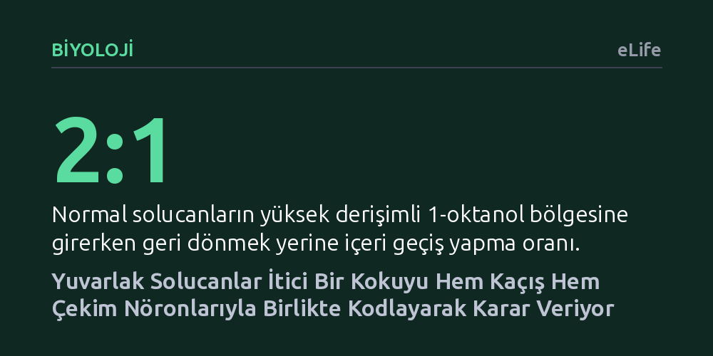

BIYOLOJI · eLife · 2026-10-27
Araştırmacılar, yuvarlak solucanların itici bir kimyasal olan 1-oktanol kokusunu sinir ağlarında nasıl işlediğini inceledi. Solucanın bu kokuyu sadece kaçış değil, aynı anda hem çekim hem kaçınma nöronlarını etkinleştirerek kodladığı ve derişime göre karar verdiği bulundu.
En basit sinir sistemlerinin bile çevredeki bir kokuyu yalın bir aç-kapa düğmesi gibi değil, risk ve ödülü temsil eden zıt sinyalleri tartarak esnek bir karara dönüştürdüğünü gösterir.

Doğada hayatta kalmak, sürekli bir risk ve ödül dengesini yönetmeyi gerektirir. Bir canlı besin ararken avcılardan kaçınmak, yeni alanlar keşfederken de zehirli kimyasallardan uzak durmak zorundadır. Klasik sinirbilim yaklaşımında, basit canlıların koku sistemlerinin ayrılmış bağımsız hatlar mantığıyla çalıştığı varsayılırdı; yani belirli bir koku duyusal nöronu yalnızca kaçınma tepkisini, bir başkası ise yalnızca yaklaşma tepkisini tetiklerdi. Ancak doğadaki kimyasal çevre bu kadar siyah-beyaz değildir; aynı kimyasal madde farklı ortamlarda bir besin kaynağının işareti de olabilir, ölümcül bir tehlikenin habercisi de.
Sinirbilimciler, yalnızca 302 nörona sahip olan ve sinirsel bağlantı haritası eksiksiz çıkarılmış Caenorhabditis elegans solucanını bu temel karar mekanizmasını çözmek için mükemmel bir model olarak görmektedir. Bugüne kadar yapılan çalışmalarda 1-oktanol adlı koku molekülünün bu solucanlar için kesin bir kaçınma uyarısı olduğu kabul ediliyordu. Ancak araştırmacılar, bu kadar yalın bir canlının karmaşık bir kimyasal ortamda tek bir molekülü gerçekten tek boyutlu bir itici güç olarak mı algıladığını, yoksa daha incelikli bir değerlendirme mi yaptığını sorgulamaya başladı.
Araştırma ekibi, solucanın beynindeki hesaplamayı doğrudan izleyebilmek için mikroakışkan çip teknolojisi ile NeuroPAL adı verilen gelişmiş bir floresan görüntüleme yöntemini bir araya getirdi. NeuroPAL sistemi sayesinde canlı solucanın sinir sistemindeki her bir nöron kendine özgü renk kombinasyonlarıyla parlayarak mikroskop altında tereddütsüz şekilde teşhis edilebiliyor. Bilim insanları, hareketsizleştirilen solucanlara mikroakışkan kanallar vasıtasıyla kontrollü sürelerde 1-oktanol sıvısı uygularken, nöronların elektriksel etkinliğini yansıtan kalsiyum sinyallerini konfokal mikroskopla gerçek zamanlı olarak kaydetti.
Hücresel düzeydeki bu kayıtların yanı sıra, solucanların serbestçe dolaşabildiği mikroakışkan labirentlerde davranış testleri yapıldı. Solucanların koku bölgesine giriş çıkışları, dönme sıklıkları ve hareket hızları yüksek çözünürlüklü otomatik video takip sistemleriyle incelendi. İki zıt sinyal yolağının davranışa katkısını ayrıştırmak amacıyla, koku iletiminde görevli TAX-4 ve OSM-9 iyon kanallarını devre dışı bırakan genetik mutasyonlara başvuruldu. Bununla da yetinmeyip, kemogenetik araçlar kullanarak hedef nöronlara sinek kökenli klorür kanalları yerleştirdiler ve histamin çözeltisiyle yalnızca hedeflenen nöronları geçici olarak susturdular.
Deney sonuçları, koku algısına dair köklü kabulleri sarsan bir tablo ortaya koydu. Bilinenin aksine, 1-oktanol molekülü solucanın sinir sisteminde yalnızca kaçınmayı yöneten nöronları (özellikle ASH nöronunu) uyarmakla kalmıyordu; aynı zamanda normalde besin çekimini sağlayan AWC nöronlarını da güçlü şekilde etkinleştiriyordu. Üstelik bu iki nöron grubu kokuya tamamen zıt tepkiler veriyordu: ASH nöronu koku verilir verilmez etkinleşerek kaçış komutunu tetiklerken, AWC nöronu koku varken baskılanıyor ve koku kesildiğinde patlama yaparak solucanı koku kaynağına doğru yönlendiriyordu.
Araştırmacılar derişimi düşürdüklerinde dengenin çarpıcı biçimde değiştiğini keşfetti. 1-oktanol yüksek derişimde (2,2 mM) uygulandığında kaçınma nöronları baskın gelip solucanı uzaklaştırırken, düşük derişimlerde (0,22 mM ve 0,66 mM) kaçınma nöronlarının zayıf kalması nedeniyle solucanlar bu itici kokuya doğru güçlü bir çekim sergiledi. Çekim yolağını kontrol eden TAX-4 kanalı genetik olarak silindiğinde solucanlar tüm derişimlerde kokudan kaçmaya başladı. Kemogenetik yöntemle çekim nöronu AWC susturulduğunda hayvanlar kokudan tamamen uzaklaşırken, kaçınma nöronu ASH susturulduğunda aynı kokuya duyulan çekim belirginleşti.
Solucanların sınır çizgilerindeki davranışları incelendiğinde başka bir zıtlık daha göze çarptı: Yüksek derişimdeki koku bölgesine yaklaşan solucanlar, genel kaçınma eğilimlerine rağmen bölge sınırında geri dönmek yerine içeri girmeyi iki kat daha sık tercih ediyordu. Matematiksel modelleme ve hareket analizleri, hayvanın bu çelişkiyi hızını geçici olarak artırarak çözdüğünü gösterdi; yani solucan tehlikeli bölgeye adım atsa bile hızla oradan uzaklaşarak genel bir kaçınma sağlıyordu.
Bu bulgular, en ilkel sinir ağlarının dahi dış dünyayı siyah ve beyaz etiketlerle algılamadığını, aksine tek bir duyusal girdiyi aynı anda hem risk (kaçınma) hem de ödül (çekim) ekseninde değerlendirdiğini kanıtlıyor. İki zıt yolağın göreceli gücü, hayvanın beslenme durumuna veya ortamdaki kimyasal yoğunluğa göre dengelenerek davranışın esnek biçimde ayarlanmasını sağlıyor. Koku algısının nematodlardan böceklere ve memelilere kadar benzer bir kombinatoryal mantıkla evrimleştiği düşünüldüğünde, bu çalışma duyusal çatışmaların beyinde nasıl çözüldüğüne dair evrensel bir ilke sunuyor.